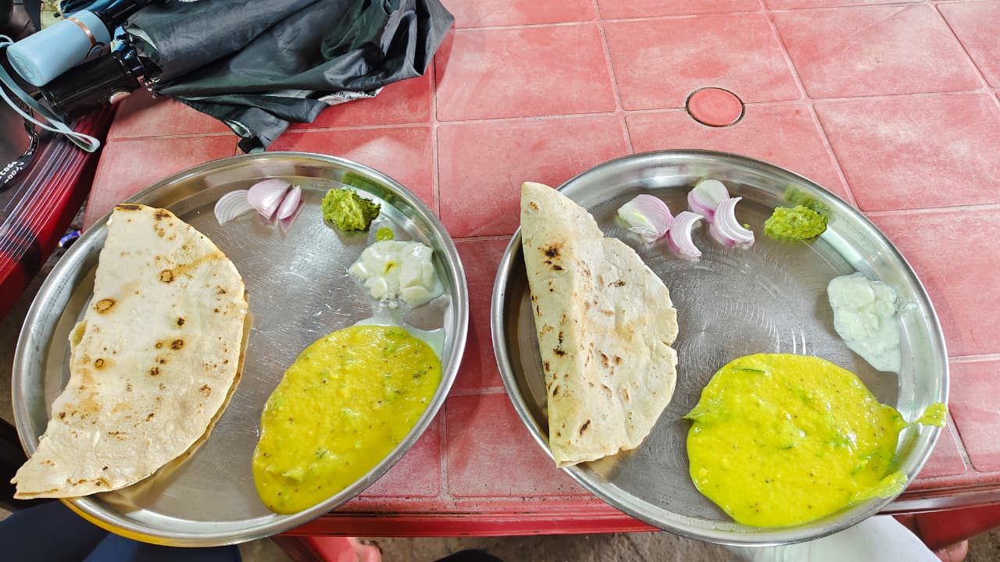
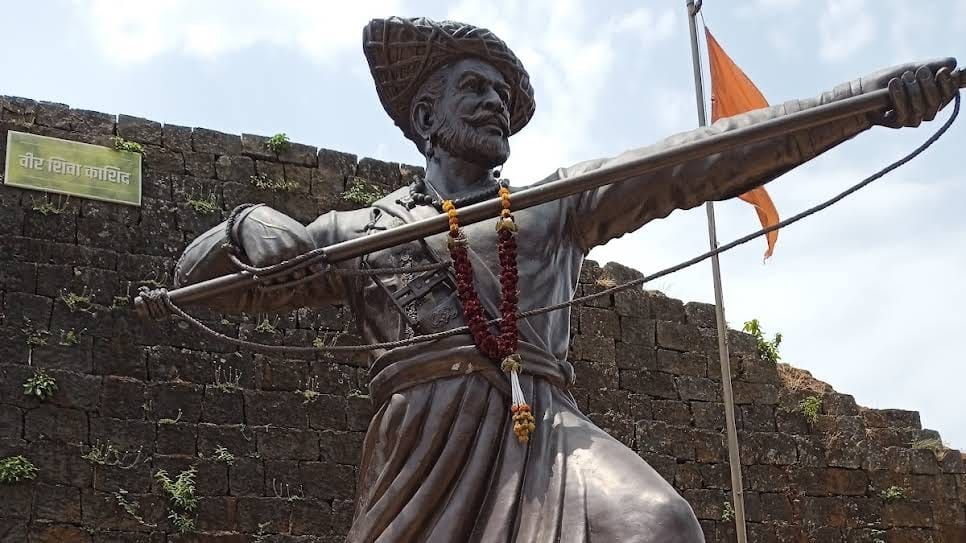
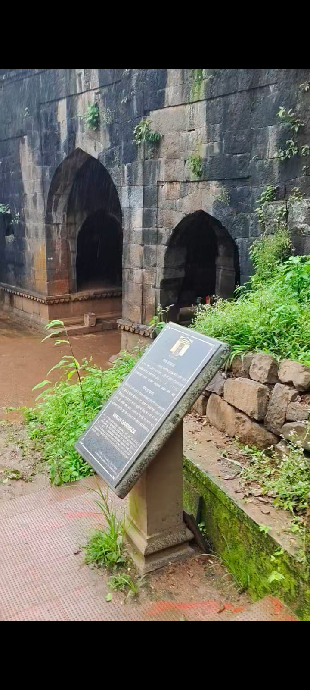

STRUCTURE
Strong Fort Walls
Massive walls and defensive structures were built to protect the fort and strengthen its strategic position.

HERITAGE / 05
A historic hill fort surrounded by the landscape of Kolhapur.
SCROLL TO EXPLORE
01 / A FORTRESS OF HISTORY
In 1660, Chhatrapati Shivaji Maharaj was besieged at Panhala Fort by Siddi Jauhar. He later made a daring escape toward Vishalgad.
Baji Prabhu Deshpande and his soldiers held back the pursuing enemy until Shivaji Maharaj reached safety. Ghod Khind was later renamed Pavan Khind in their honour.

02 / LOCAL EXPERIENCE
At the top of Panhala Fort, local food spaces offer visitors a taste of traditional Maharashtrian cuisine.
One of the dishes enjoyed here is Pithla Bhakari, a simple and authentic combination that reflects the food culture of Maharashtra.

PITHLA BHAKARI Traditional Maharashtrian food enjoyed during the visit.
03 / ARCHITECTURE
STRUCTURE
Massive walls and defensive structures were built to protect the fort and strengthen its strategic position.
GATEWAY
The fort's gateways formed important points of entry and were designed with defence in mind.
LANDSCAPE
Its elevated location provides natural defensive advantages and wide views of the surrounding landscape.
04 / HISTORY
Panhala's most famous chapter is connected with Chhatrapati Shivaji Maharaj, the siege of 1660 and the legendary escape toward Vishalgad.
1659
Chhatrapati Shivaji Maharaj captured Panhala Fort from the Adil Shahi dynasty, bringing the fort into the Maratha sphere.
1660
Bijapuri general Siddi Jauhar surrounded Panhala, keeping Shivaji Maharaj and his forces inside the fort for several months.
JULY 1660
During a heavy downpour, Shivaji Maharaj made a daring escape from Panhala with a small group of loyal soldiers, heading toward Vishalgad.
05 / VISUAL RECORD
Photographs captured during our visit, documenting the fort, its surroundings and its historic character.


CONTINUE EXPLORING
← BACK TO HERITAGE